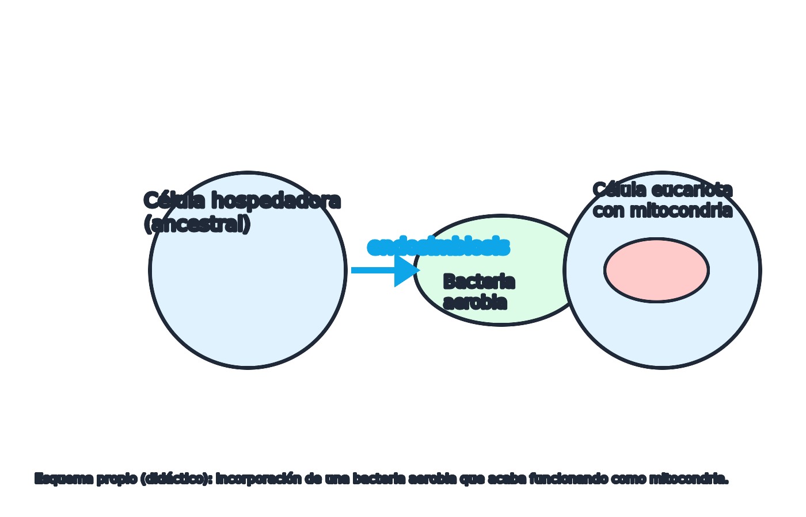

Teoría: endosimbiosis seriada
Idea central
La endosimbiosis seriada propone que ciertas bacterias vivieron dentro de otra célula y, con el tiempo, se integraron hasta convertirse en orgánulos. No es una “fusión mágica”: es una relación biológica estable que aporta ventajas.
¿Qué se endosimbiontó primero?
- Mitocondrias: a partir de bacterias aerobias (relacionadas con alfa-proteobacterias).
- Cloroplastos: a partir de cianobacterias fotosintéticas.
Esquema

Clave para 1º Bach: la ventaja del huésped es obtener más energía (respiración) y, en otros linajes, la capacidad de fotosintetizar.